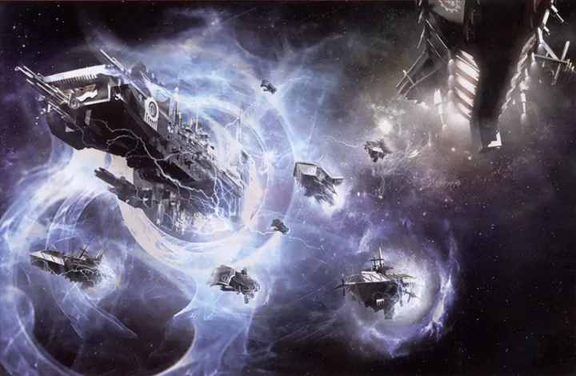
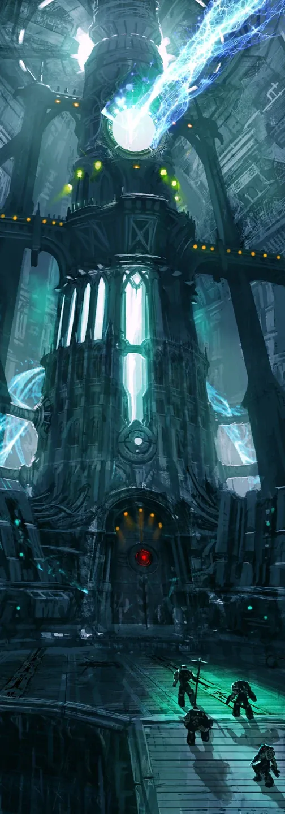
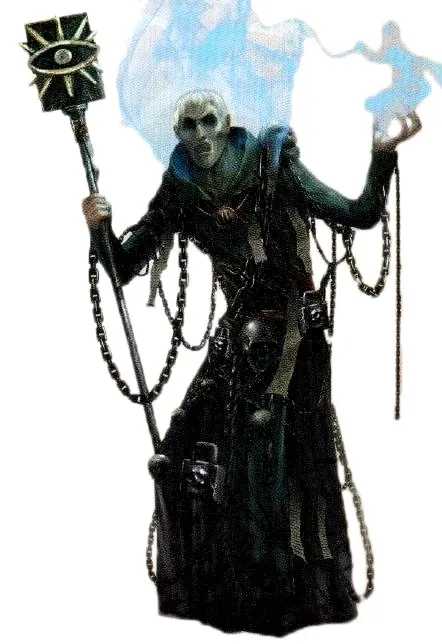
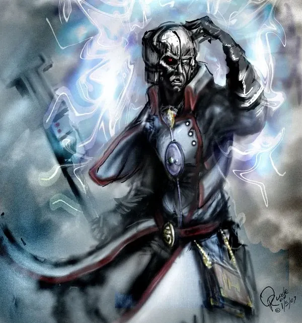
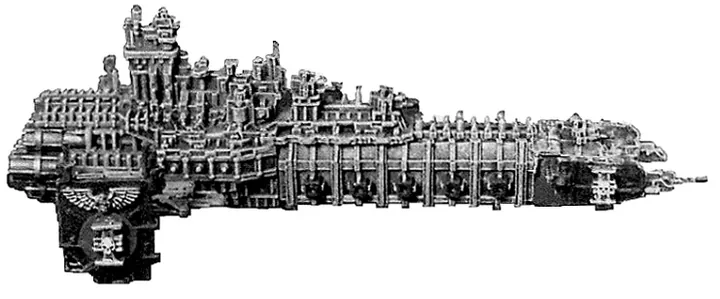
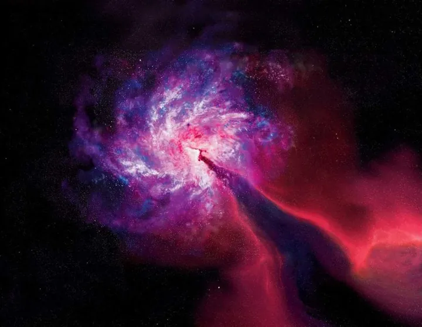
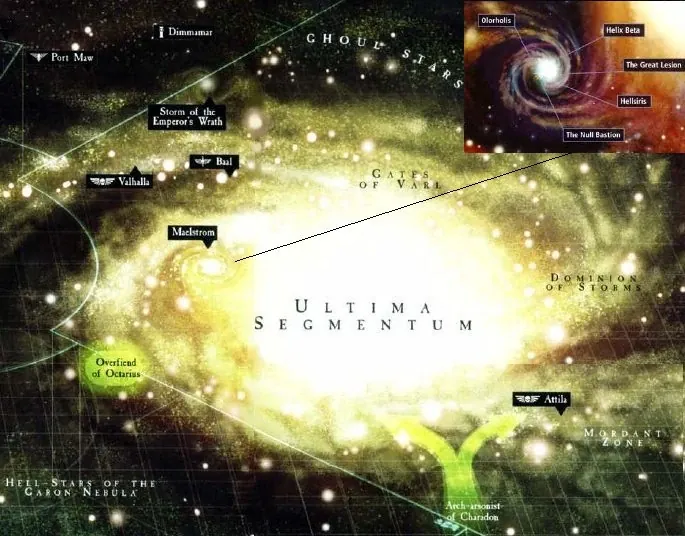
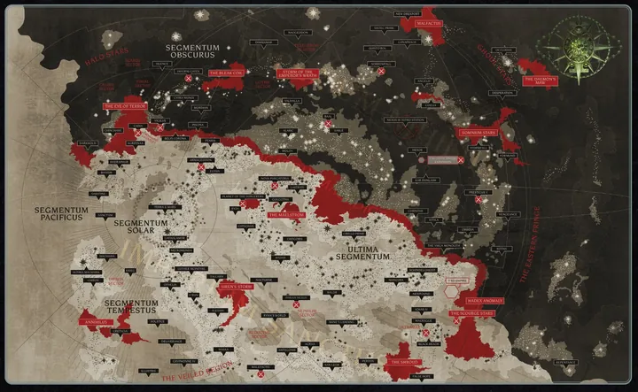

00Warp คืออะไร

Warp (หรือ Immaterium, Empyrean, Sea of Souls) คือมิติคู่ขนานที่ซ้อนทับกับจักรวาลของเรา ไม่ได้ประกอบด้วยสสาร แต่ประกอบด้วย พลังจิตและอารมณ์ ของสิ่งมีชีวิตทุกชนิด
ความกลัว ความโกรธ ความหวัง และความปรารถนาของหลายล้านล้านชีวิตก่อตัวเป็นกระแสและพายุใน Warp อารมณ์ที่รวมกันมหาศาลที่สุดกลายเป็นสิ่งมีชีวิตในตัวเอง — เทพแห่ง Chaos ทั้งสี่ และบริวารปีศาจของพวกมัน (ดู เทพเจ้าแห่ง 40K)
เวลาและระยะทางใน Warp ไม่เหมือนโลกจริง — การเดินทางไม่กี่วันใน Warp อาจเท่ากับหลายสัปดาห์หรือหลายร้อยปีในโลกจริง ทหาร Chaos บางคนจึงยังมีชีวิตอยู่ตั้งแต่ยุค Horus Heresy
01การเดินทางข้ามดาว
ยานของมนุษย์เดินทางเร็วกว่าแสงได้ด้วยการ "ดำ" ลงไปใน Warp แล้วโผล่ออกมาที่จุดหมาย แต่ Warp อันตรายและคาดเดาไม่ได้ ต้องใช้ 3 สิ่งร่วมกัน:

Gellar Field
โล่พลังงานรอบยานที่กันปีศาจไม่ให้เข้ามา ถ้าโล่พังกลางทาง ลูกเรือทั้งลำอาจถูกปีศาจเขมือบหรือเสียสติ — ยานร้างที่ลอยออกมาจาก Warp ส่วนหนึ่งเกิดจากเหตุนี้

Navigator
มนุษย์กลายพันธุ์จากตระกูล Navis Nobilite มี "ตาที่สาม" บนหน้าผากที่มองเห็นกระแสใน Warp ได้ ถ้าคนธรรมดามองตาที่สามจะตายทันที

Astronomican
ประภาคารพลังจิตบน Terra ที่จักรพรรดิส่งสัญญาณผ่าน Warp ทั่วจักรวรรดิ Navigator ใช้แสงนี้นำทาง ต้องใช้ผู้ใช้พลังจิตหลายพันคนหล่อเลี้ยง และหลายคนตายทุกวัน

02การสื่อสาร: Astropath

ข้อความวิทยุเดินทางช้ากว่าแสง การส่งข่าวข้ามดาวจึงต้องใช้ Astropath ผู้ใช้พลังจิตที่ผ่านพิธี "Soul-binding" ผูกวิญญาณกับจักรพรรดิเพื่อป้องกันปีศาจ พิธีนี้ทำให้ตาของพวกเขาบอดแทบทุกคน
ข้อความถูกส่งเป็นภาพและสัญลักษณ์ในจิต ผู้รับต้องตีความ — จึงเกิดความผิดพลาดบ่อย เมื่อ Tyranids เข้าใกล้ "Shadow in the Warp" จะปิดกั้นการสื่อสารนี้จนดาวถูกตัดขาด
03ผู้ใช้พลังจิต (Psyker) และ Black Ships

Psyker คือผู้ที่ดึงพลังจาก Warp มาใช้ในโลกจริงได้ — อ่านใจ ยิงสายฟ้า มองอนาคต แต่ทุกครั้งที่ใช้คือการเปิดประตูเล็ก ๆ ปีศาจจึงพยายามสิงร่างพวกเขาเสมอ Psyker ที่ไม่ได้รับการฝึกอาจกลายเป็นประตูให้ปีศาจบุกทั้งดาว (Perils of the Warp)
จักรวรรดิจึงส่ง Black Ships ของ Inquisition คุ้มกันโดย Sisters of Silence ไปเก็บตัว Psyker จากทุกดาวส่งไป Terra บางคนถูกฝึกเป็น Astropath หรือ Sanctioned Psyker รับใช้กองทัพ ส่วนที่อ่อนแอหรืออันตรายถูกสังเวยให้ Astronomican และ Golden Throne

มนุษย์ส่วนน้อยเกิดมาไม่มีตัวตนใน Warp เลย ทำให้พลังจิตรอบตัวดับลง คนทั่วไปรู้สึกขนลุกเมื่ออยู่ใกล้ — Sisters of Silence และนักฆ่า Culexus คือ Blank ที่ถูกใช้เป็นอาวุธ (ดู Sisters of Silence)
04รอยแยกใน Warp: Eye of Terror, Maelstrom, Great Rift
ในบางพื้นที่ Warp กับโลกจริงรั่วไหลเข้าหากัน กลายเป็นดินแดนที่กฎฟิสิกส์ใช้ไม่ได้และปีศาจเดินบนดาวได้ตามใจ

Eye of Terror
เกิดตอน Slaanesh ถือกำเนิด อยู่ตรงอาณาจักร Aeldari เดิม เป็นที่อยู่ของ Legion ผู้ทรยศมาหมื่นปี ทางออกหลักคือ Cadian Gate

Maelstrom
รอยแยกใหญ่เป็นอันดับสองในเขต Segmentum Ultima ที่อยู่ของโจรสลัดและ Red Corsairs

Great Rift (Cicatrix Maledictum)
เกิดขึ้นหลัง Cadia แตก ผ่ากาแล็กซีจากขอบถึงขอบ แบ่งจักรวรรดิเป็น Imperium Sanctus (ฝั่งที่ยังเห็นแสง Astronomican) และ Imperium Nihilus (ฝั่งที่ถูกตัดขาด)

05ทางอื่นที่ไม่ต้องใช้ Warp
Webway ของ Aeldari
อุโมงค์มิติที่ Old Ones สร้างไว้ระหว่าง Warp กับโลกจริง ปลอดภัยกว่า Warp มาก Aeldari, Drukhari และ Harlequins ใช้เดินทาง จักรพรรดิเคยพยายามสร้าง Webway ของมนุษย์ใต้พระราชวัง แต่ถูก Magnus ทำลายโดยไม่ตั้งใจ
เทคโนโลยีของ Necrons
Necrons ไม่มีวิญญาณ จึงใช้เทคโนโลยีเทเลพอร์ต ประตูมิติ Dolmen Gate และเสา Pylon ที่กดพลังของ Warp ได้ — น่ากลัวที่สุดสำหรับ Chaos
T'au: Warp แบบตื้น
T'au ใช้การกระโดดเข้า Warp แบบตื้นและสั้น ปลอดภัยกว่าแต่ช้ากว่ามนุษย์มาก ในยุคหลังเริ่มทดลองเทคโนโลยีใหม่ที่เสี่ยงกว่า
Orks: ขับไปตามความเชื่อ
ยาน Ork เดินทางใน Warp ด้วยพลัง WAAAGH! ของลูกเรือ และมักโผล่ออกมาผิดที่ บางครั้งใช้ "Tellyporta" เทเลพอร์ตทั้งกองทัพ